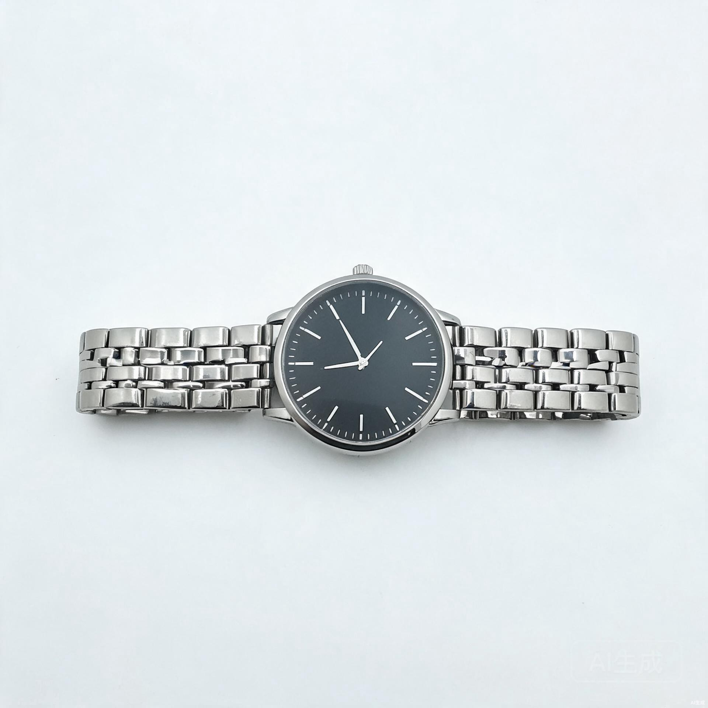
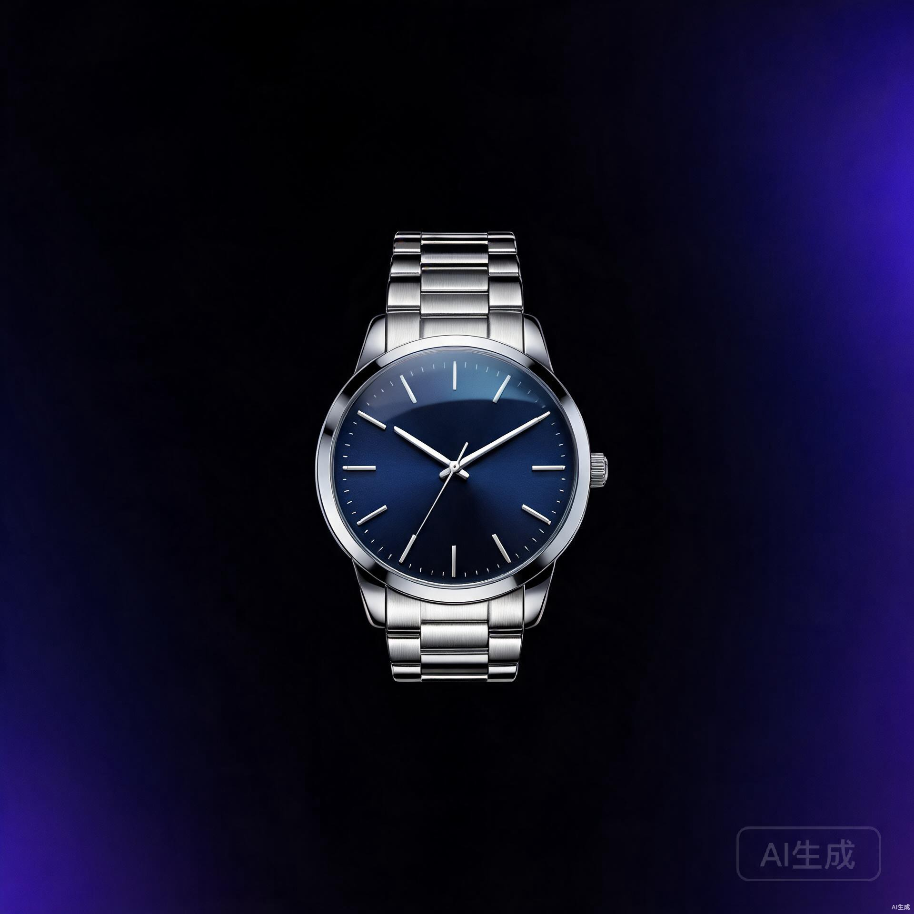
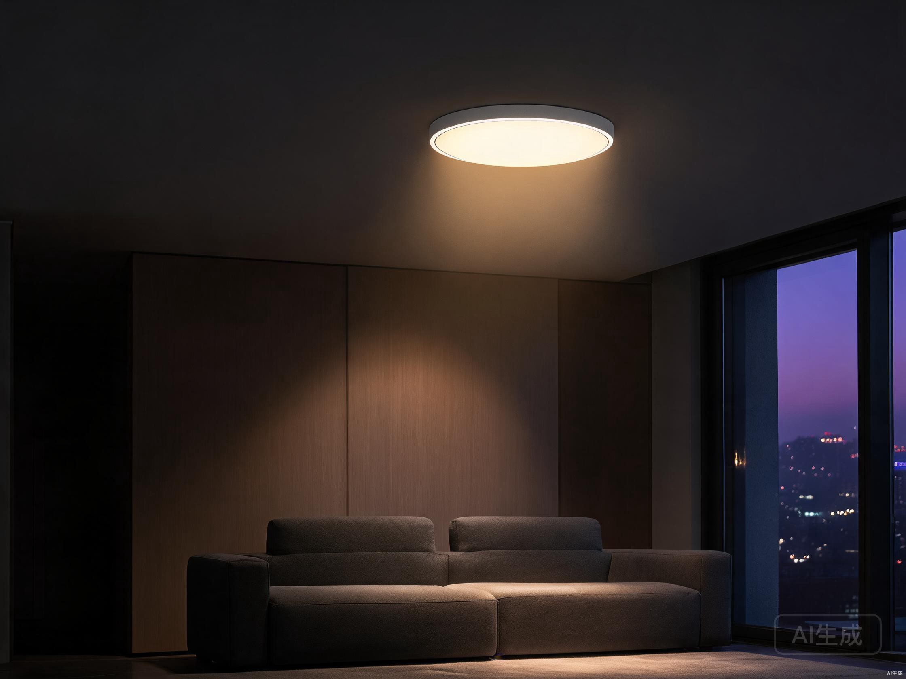
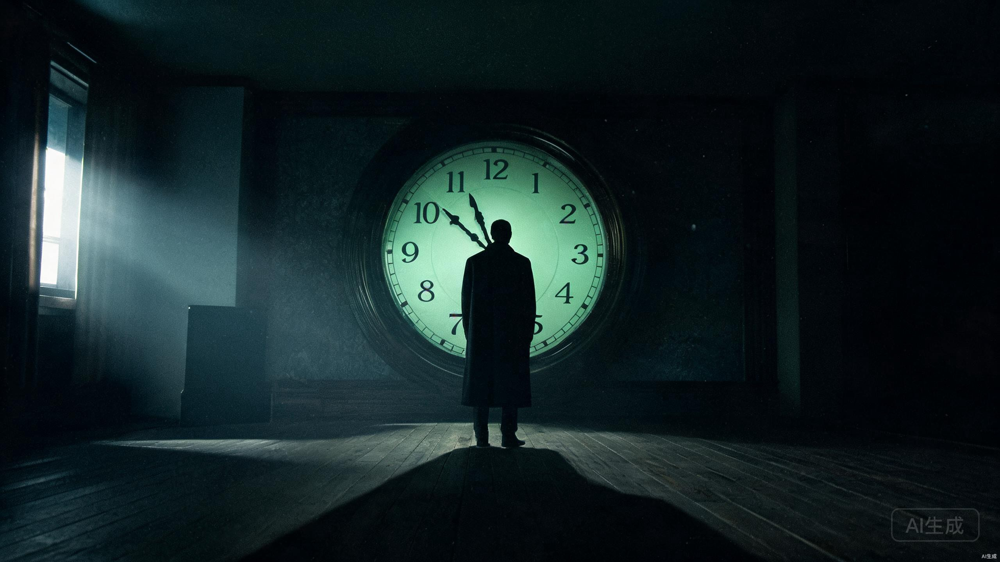

AI 视觉设计师 · 8 年视觉功底 × AI 工作流
8 年电商视觉 / 产品精修 / 品牌 IP 经验，正在用 TRAE 提示词 + RunningHub 生图 + Seedance 生视频 + 142 技能体系，把设计师的审美判断力，封装成可批量复用的 AI 视觉流水线。
懂设计的人用 AI，产出是「审美 × 效率」的乘积。
我做过高端石英表精修、灯饰氛围视觉、粤式餐饮品牌 IP、电商详情页与全案视觉， 也带队 3-8 人美工团队建立设计规范体系，把详情页产出效率提升了 30%+。
现在我把 AI 当成真正的生产力：从需求 → 提示词 → 生图 → 精修 → 成片， 一个人就是一条完整的视觉流水线。我相信：AI 是杠杆，不是替代品——提示词，是设计思维的代码化。
石英表/灯饰商业精修（金属·玻璃·光影），电商主图详情页，品牌 VI 与公众号视觉。审美在线，对色彩、构图、质感有成熟判断力。
TRAE 提示词工程 → RunningHub 生图工作流 → Seedance 生视频 → 后期成片。AI 做 70% 粗修与场景，手工做 30% 精修细节，效率提升 3-5 倍。
曾任电商美工主管，带队 3-8 人；建立设计规范体系与标准化流程，详情页产出效率提升 30%+；从执行到管理，能带队也能亲自下场。
产品精修 · 品牌 IP · 灯饰视觉 · AI 视频。示例作品由 AI 生成占位，可随时替换为真实项目图。
按住左右拖拽，查看石英表商业精修的光影与材质还原 —— 8 年精修功底的直接呈现


Before After
原图 AI 合成
▶把设计师的审美判断封装成可批量复用的 AI 流水线 —— 我区别于普通设计师的差异化核心。
把商业需求翻译成设计目标：构图、光影、质感、品牌调性——用 TRAE 搭建 AI 工作流，产出高质量提示词与执行方案。
在 RunningHub 无限画布建立生图工作流，AI 完成 70% 的粗修与场景合成，批量产出主图、场景图与氛围素材。
关键细节、品牌质感、商业标准由手工精修把关——AI 提效，审美兜底，品质不减。
分镜设计 → 提示词 → Seedance 生成视频 → 后期合成（剪辑/音效/配音/音乐），一个人完成完整 AI 短视频制作。
142 技能体系覆盖全链路：分镜 / 提示词 / 视觉 / 后期 / 音效 / 配音 / 音乐
由 142 技能体系驱动的 AI 短剧项目：世界观 → 分镜 → 提示词 → Seedance 生视频 → 后期合成，全流程 AI 化。
基于 RunningHub 无限画布的生图 + 生视频工作流，商业摄影级粤菜视觉内容，30 秒宣传短视频全流程。
我带着 8 年视觉功底与可落地的 AI 工作流，期待加入需要「审美 × 效率」双能力的团队。 欢迎招聘方、甲方与我联系，也欢迎下载我的简历进一步了解。